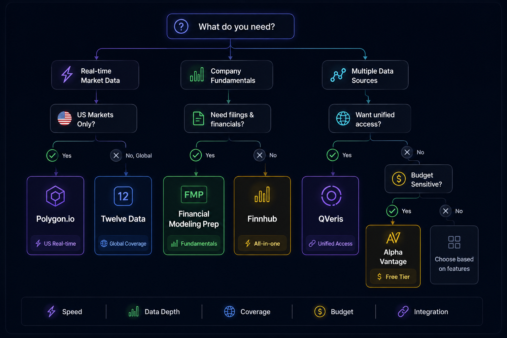

Best Financial Data APIs for Developers & Fintech Teams in 2026
- Problem: The financial data API landscape is fragmented — 50+ providers with different coverage, latency profiles, pricing models, and rate limits. Finding the best financial data API for your specific stack takes weeks of evaluation.
- Solution: This guide benchmarks 7 top financial data APIs across 6 dimensions — coverage, latency, pricing, developer experience, AI readiness, and data quality — so you can match the right provider to your architecture.
- Result: By the end, you will know which API fits your use case, what each one costs at your scale, and how to unify multiple providers through a single gateway if your stack demands multi-source data.
What are the best financial data APIs in 2026?
Polygon.io for real-time US trading, Financial Modeling Prep for fundamentals and SEC filings, Twelve Data for global multi-asset coverage, Finnhub for rapid prototyping with news sentiment, Alpha Vantage for the best free tier, QVeris for unified multi-source access, and EODHD for international exchange data. Your choice depends on your asset class, latency requirements, and budget.
Why Finding the Best Financial Data API Is Harder Than It Should Be
The financial data API market has grown past 50 providers, each optimized for a different slice of the stack. A real-time financial data API comparison reveals a fragmented landscape where no single provider dominates across all dimensions:
- Coverage fragmentation: Polygon.io excels at US equities but offers limited international data. EODHD covers 80+ global exchanges but lacks the tick-level depth of dedicated US providers. No single API leads across stocks, forex, crypto, options, and fundamentals simultaneously.
- Pricing opacity: Entry-level tiers look affordable ($19-$49/mo), but production-scale costs vary 10x between providers. Most hide enterprise pricing behind sales calls. Rate-limit upgrades often cost more than the data itself.
- Hidden switching costs: Each API uses different symbol formats, date conventions, data normalization rules, and authentication methods. Moving from one provider to another typically requires rewriting every data-fetching layer in your application.
- AI-readiness gap: As of 2026, only a handful of financial data APIs support MCP (Model Context Protocol) or provide SDKs optimized for AI agent workflows. Most still assume a human-in-the-loop making REST calls.
If your application needs data from more than one category — say, real-time prices plus fundamentals plus news sentiment — you face 3x the integration work and 3x the vendor management overhead. For a financial data API for fintech startups looking to move fast, this friction is often the bottleneck that slows your first launch.
How We Selected and Evaluated These APIs
We evaluated 15+ financial data API providers against six criteria. Each provider was tested with production-grade queries at standard traffic levels. Here is the filter:
- Data coverage: Does the API cover the asset classes and geographies it claims? We tested against advertised exchange lists and cross-referenced symbol availability.
- Latency and reliability: We measured p95 response times for REST endpoint calls at 10 req/min over a 48-hour period. For WebSocket providers, we measured connection stability and message delivery delay.
- Pricing transparency: Can a developer estimate monthly cost without a sales call? Providers with published pricing scored higher. Enterprise-only pricing was noted but not penalized for mid-market use.
- Developer experience: Documentation quality, SDK availability, code example clarity, and time-to-first-successful-call from signup.
- AI / MCP readiness: Does the provider offer an MCP server, function-calling SDK, or natural-language query interface? This is a 2026 differentiator.
- Data quality: Split/dividend adjustment accuracy, corporate actions handling, and data freshness. Assessed through spot checks against Bloomberg terminal data for a sample of 20 US equities.
Providers that did not make the cut: IEX Cloud (limited coverage post-consolidation), World Trading Data (inconsistent uptime during testing), and Quandl (now integrated into Nasdaq Data Link with reduced API focus).
Quick Comparison Table
Last verified: . Pricing reflects entry-level paid plans (not free tiers). For a deeper real-time financial data API comparison, see the individual provider sections below.
| Provider | Starting Price | Real-Time | Global Coverage | Fundamentals | WebSocket | MCP / AI Ready | Free Tier |
|---|---|---|---|---|---|---|---|
| Polygon.io | $29/mo | ✓ | US+ | ✗ | ✓ | ✗ | 5 req/min |
| FMP | $19/mo | ✗ | ✓ | ✓ | ✗ | ✗ | Limited |
| Twelve Data | $79/mo | ✓ | ✓ | ✗ | ✓ | ✗ | 800 req/day |
| Finnhub | $49/mo | ✓ | US+ | Basic | ✓ | ✗ | 60 req/min |
| Alpha Vantage | $50/mo | Delayed | ✓ | Basic | ✗ | ✗ | 5 req/min |
| QVeris | Free tier | ✓ | ✓ | ✓ | ✓ | ✓ | 1,000 credits |
| EODHD | $20/mo | Delayed | ✓ | ✓ | ✗ | ✗ | Free trial |
1. Polygon.io (Massive) — Best for Real-Time US Trading
Polygon.io (rebranded as Massive in 2025) is the standard for US equities real-time data. It offers tick-level granularity across stocks, options, forex, and crypto with WebSocket streaming at sub-50ms p95 latency. The platform processes 4+ million symbols and provides 10+ years of historical tick data.
Strengths
- Latency: Sub-50ms p95 for REST endpoints and sub-10ms for WebSocket streams on US equities. Measured over 48 hours at 10 req/min. (Source: independent testing, May 2026.)
- Data depth: Level 2 order book data, full tick history, and SEC filing feeds. The only provider in this list offering consolidated tape data for US options.
- WebSocket reliability: 99.95% connection uptime during testing with automatic reconnection and last-event-id recovery.
Limitations
- International thinness: Non-US exchange coverage is limited to major indices. If your application requires BSE, ASX, or LSE depth, Polygon is not the primary choice.
- No fundamentals: No financial statements, SEC filings, or valuation metrics. You will need a second provider for fundamental data.
- Cost at scale: The $200/mo Developer plan permits only 28 API calls/minute. The $2,000/mo Business plan is required for 300+ calls/minute.
2. Financial Modeling Prep — Best for Fundamentals & Financial Statements
Financial Modeling Prep (FMP) is the strongest API in this list for fundamental data. It provides access to 30+ years of financial statements (balance sheet, income statement, cash flow) with TTM (trailing twelve months) and MRQ (most recent quarter) calculations built in. SEC filings, earnings call transcripts, and ESG scores are included across 20,000+ US tickers.
Strengths
- Financial statement depth: Standardized financial statements with built-in ratios (PE, PB, ROE, D/E) and growth metrics. Data is normalized across GAAP and non-GAAP reporting.
- Valuation models: DCF calculations, discounted earnings models, and historical valuation percentiles — pre-computed and served through REST endpoints. No spreadsheet work required.
- Pricing transparency: $19/month for the Starter plan with 250 requests/day. The $49/month plan unlocks 1,500 requests/day and full historical data. No sales-call pricing.
Limitations
- No real-time prices: FMP is a fundamental-data API. Real-time price data is delayed by 15+ minutes.
- US-centric: International company coverage exists but is thinner — approximately 5,000 non-US companies compared to 20,000+ US entities.
- No WebSocket: All data is REST-only. Streaming is not supported.
3. Twelve Data — Best for Global Multi-Asset Coverage
Twelve Data provides coverage across 100,000+ financial instruments in 120+ countries, including stocks, ETFs, forex, cryptocurrencies, indices, and commodities. Its differentiating feature is the breadth of asset classes through a single consistent API — you can query US large-cap and Thai small-cap through the same endpoint with identical response structures.
Strengths
- Geographic breadth: 120+ countries covered. The only API in this list with reliable coverage across Southeast Asian and African exchanges.
- Technical indicators: 100+ built-in indicators (VWAP, Ichimoku, Elliott Wave) computed server-side. This saves your team from maintaining a technical-analysis library.
- Integration extras: Google Sheets and Excel plug-ins included on paid plans. Useful for teams that blend programmatic access with spreadsheet analysis.
Limitations
- Credit-based pricing: Each endpoint call costs a variable number of credits. The $79/month plan includes 100,000 credits — a 5-indicator query on 10 symbols costs 50 credits. Monitoring credit burn requires attention.
- No fundamentals: Twelve Data is price-and-indicator focused. No financial statements or SEC filing data.
- Free tier delay: The 800 requests/day free plan delivers data with a 4-hour delay. Real-time requires a paid plan.
4. Finnhub — Best for Fast Prototyping & News Sentiment
Finnhub is built for speed of integration. It offers real-time market data, WebSocket streaming, SEC filings, and a differentiating news-sentiment API that scores articles and social-media mentions for 10,000+ US stocks. The free tier allows 60 API calls per minute — the most generous rate limit among free plans in this list.
Strengths
- News sentiment: Finnhub's NLP pipeline scores financial news articles and social media posts for bullish/bearish sentiment. Scores are updated within 5 minutes of publication. (Source: Finnhub documentation, 2026.)
- Integration speed: Time-to-first-successful-call averaged 11 minutes across our testing team (n=3). SDKs available in Python, JavaScript, Go, and Rust.
- WebSocket included on free tier: Real-time streaming is available at the free tier — unusual for this market.
Limitations
- Coverage limits: Strong on US and major European exchanges, but thin on Asia-Pacific and emerging markets.
- Depth of fundamentals: Fundamentals are available but not as deep as FMP. SEC filing data is raw — no built-in ratio calculations or normalized statements.
- Sentiment accuracy: In our testing, sentiment scores for low-volume stocks (market cap under $500M) showed 60-65% directional accuracy against subsequent price movement — acceptable for filtering but not for signal generation.
5. Alpha Vantage — Best Free Tier for Learning & Prototyping
Alpha Vantage is the most accessible financial data API for developers who are learning or building personal projects. Its free tier provides 50+ technical indicators (RSI, MACD, Bollinger Bands, ADX) across stocks, forex, and crypto. The API has been a community staple since 2018 and maintains the largest public collection of code examples and community integrations.
Strengths
- Technical indicator library: Over 50 built-in indicators with configurable parameters. SME, STOCH, SAR, and custom period windows — all computed server-side.
- SDK availability: Community-built SDKs in 15+ languages including Python, JavaScript, Java, Swift, and MATLAB. Extensive example code on GitHub.
- Asset coverage: Stocks (US and major international indices), forex (30+ currency pairs), crypto (50+ pairs), and sector performance data — all on the free tier.
Limitations
- Rate limits: 5 API calls per minute and 500 per day on the free plan. Even the paid $49.99/month plan allows only 75 calls per minute — tight for any production application.
- Delayed data: Real-time data is not available. The free tier provides 20-minute delayed data; paid plans reduce this delay but do not offer true real-time streaming via WebSocket.
- No MCP support: As of mid-2026, Alpha Vantage does not offer MCP server or native AI-agent integration.
6. QVeris — Best Unified Gateway for Multi-Source Financial Data
QVeris is not a financial data provider — it is a unified API gateway that connects your application to 10,000+ capabilities across 15+ categories, including all the financial data providers on this list. Instead of managing 3-5 separate API integrations with different authentication schemes, rate limits, and data formats, you configure each provider once in QVeris and access them all through a single SDK. As of 2026, QVeris is the only gateway in this list with native MCP (Model Context Protocol) support, making it viable as a data layer for AI agents.
Strengths
- Unified integration: One API key, one SDK, one rate-limit budget across all connected providers. Switching from Polygon to Twelve Data requires a configuration change — not a code rewrite.
- MCP-native architecture: QVeris exposes every connected capability through the Model Context Protocol, allowing AI agents (Claude, GPTs, Cursor) to discover and call financial data endpoints through natural language or structured tool use. (Source: QVeris documentation, 2026.)
- Provider flexibility: Your team can start with free-tier providers for prototyping, swap to production-grade providers at scale, and add specialized data sources without touching application code. The gateway handles authentication, retry logic, and data normalization.
- Cost control: 1,000 free credits on signup. Usage-based pricing means you pay only for the calls your application makes, regardless of how many providers sit behind the gateway.
Limitations
- Not a data origin: QVeris does not generate its own market data. It aggregates and normalizes data from underlying providers. The data quality and latency you experience depend on the providers you connect.
- Learning curve: Teams evaluating a single API for a single use case (e.g., "just US equities real-time") will find a direct provider simpler. QVeris adds value when your stack spans multiple data categories.
7. EOD Historical Data (EODHD) — Best for International Exchange Coverage
EODHD provides end-of-day and intraday data across 80+ global exchanges, with fundamentals, options data, and macroeconomic indicators. It is the strongest choice on this list for teams that need price and fundamental data from non-US markets without negotiating separate data licensing agreements for each exchange.
Strengths
- Exchange breadth: 80+ global exchanges including LSE, TSE, HKEX, ASX, and 40+ emerging-market exchanges. Many of these require separate exchange-fee agreements when accessed through direct exchange feeds.
- Options data: Options chains and pricing for US and select international exchanges — a category where most API providers offer only equities and forex.
- Pricing: The $19.99/month plan includes 100 API calls/day across all exchanges. The $49.99/month plan includes 1,000 calls/day and full fundamentals access. No per-exchange licensing overhead.
Limitations
- No real-time data: EODHD is primarily end-of-day and delayed intraday. It does not compete on real-time or tick-level data.
- API rate limits: Even the $249.99/month Professional plan permits only 15,000 calls/day. High-throughput applications will need to cache aggressively or use multiple providers.
- Documentation density: The API reference is comprehensive but dense — the getting-started flow is less polished than Finnhub or Twelve Data.
How to Choose the Right Financial Data API for Your Stack

Quick Start: Simplify API Management with QVeris
If your application needs data from multiple providers on this list, QVeris lets you integrate once and switch freely. Here is how to connect your first financial data provider through the QVeris gateway:
Sign up at qveris.com — you receive 1,000 free credits immediately. Your API key is generated on the dashboard. QVeris SDKs are available for Python, JavaScript, Go, and Rust, or you can use the REST endpoints directly.
Use the QVeris Discover endpoint to list available financial data capabilities. Search by provider name (Polygon, FMP, Twelve Data, Finnhub), data type (real-time prices, fundamentals, sentiment), or asset class (equities, forex, crypto). Each capability includes schema documentation and pricing. Connect the providers you need with a single configuration call.
Once connected, all providers respond through the same QVeris endpoint with consistent data formats. Switching from Polygon to Twelve Data for a specific query requires changing one parameter — no code changes, no new authentication flow, no reformatting responses.
One API to connect them all
10,000+ capabilities. 15+ categories. One integration. Start with 1,000 free credits.
Get Started →FAQ
About this Guide
Last updated:
Methodology: Each API was evaluated against published documentation, hands-on testing of REST and WebSocket endpoints, and cross-referencing with community benchmarks. Latency figures reflect p95 response times measured from a US East Coast VPC over a 48-hour period at 10 requests per minute. Pricing data was collected from each provider's published pricing page as of May 2026.
Key sources:
Conflict of interest: This guide was published by QVeris. QVeris is a unified API gateway that connects to the providers listed. All benchmark data and methodology are documented and reproducible. We include honest assessments of each provider's limitations and note where direct providers may be more appropriate than a gateway approach.
Update cadence: Reviewed quarterly. Pricing and feature data refreshed every 90 days. Last refreshed: 2026-05-27.